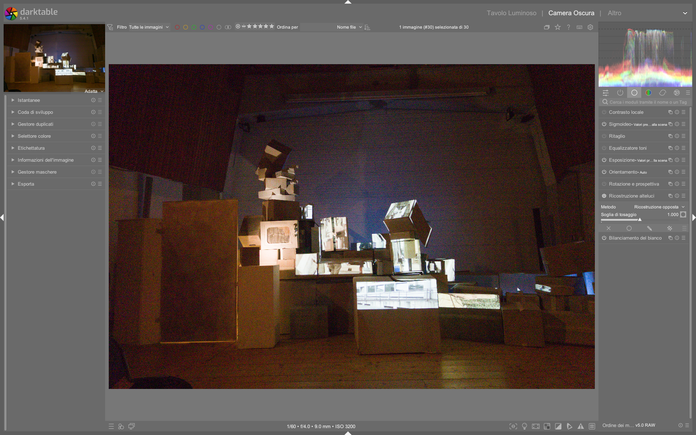

Highlight Reconstruction¶
Il modulo highlight reconstruction è il primo modulo della pipeline di elaborazione in darktable dedicato al recupero delle informazioni cromatiche nelle zone clippate — ovvero dove uno o più canali RGB hanno raggiunto il valore massimo registrabile dal sensore o dal file RAW. A differenza dei moduli di tone mapping (come AGX o Filmic RGB), che operano su dati già bilanciati e profilati, highlight reconstruction agisce molto precocemente, prima di input color profile, color calibration e white balance, su un segnale ancora grezzo e privo di significato cromatico definito 1.
Posizione critica nella pipeline
Il modulo si trova subito dopo demosaic e prima di input color profile. Questa posizione è fondamentale: poiché non esiste ancora un concetto di "bianco" o "colore" ben definito, i metodi di ricostruzione devono basarsi esclusivamente su gradienti spaziali e rapporti tra pixel adiacenti — non su valori cromatici assoluti 1.
Panoramica¶
Quando un pixel è clippato, significa che la luce incidente ha superato la capacità di registrazione del fotosensore (saturation) o del formato digitale (digital clipping). In una matrice Bayer, ogni pixel registra solo un colore (R, G o B); durante il demosaicing, i valori mancanti vengono interpolati. Se un canale è clippato ma gli altri no (es. solo il verde è a 100%), l’interpolazione produce colori innaturali (es. magenta invece che bianco), che poi vengono amplificati dal successivo bilanciamento del bianco 1.
Il modulo offre cinque metodi principali, ciascuno con un diverso compromesso tra accuratezza, velocità e robustezza:
| Metodo | Descrizione | Quando usarlo | Fonte |
|---|---|---|---|
| inpaint opposed (default) | Ricostruisce pixel clippati usando la media dei pixel adiacenti non clippati nello stesso canale. | La maggior parte delle immagini, soprattutto con aree clippate piccole e omogenee. Rapido e affidabile. | 1 |
| segmentation based | Identifica regioni clippate come “segmenti” separati e stima il colore corretto analizzando i rapporti cromatici dei pixel circostanti, scartando quelli troppo scuri o su bordi. | Aree clippate ampie e strutturate (es. cieli, finestre, superfici lucide). Più accurato di inpaint opposed ma più lento. |
1 |
| guided laplacians | Algoritmo multi-scala che propaga gradienti e dettagli da regioni valide in quelle clippate, senza fare ipotesi sul colore. Usa rumore Poisson per mascherare la differenza di texture. | Spotlights, riflessi speculari, aree clippate fino a ~256 px (a risoluzione RAW). Massima coerenza visiva, ma computazionalmente pesante. | 1 |
| clip highlights | Forza il clipping di tutti i canali al livello del canale più basso (es. se G=1.0, R e B vengono troncati a 1.0). | Oggetti naturalmente desaturati (nubi, marmo, neve) dove la perdita di colore è accettabile. | 1 |
| reconstruct in LCh | Analizza blocchi di sensori (3 pixel per Bayer, 8 per X-Trans) e ricostruisce in spazio LCh: preserva luminanza ma rende le alte luci monochrome. | Immagini con curve base ad alto contrasto che già desaturano naturalmente le luci. | 1 |
Limiti fondamentali
Nessun metodo può “recuperare magicamente” dati persi. La ricostruzione è sempre un'inferenza plausibile, non un ripristino fisico. Come sottolineato nel manuale ufficiale: "think of this method more as a way to 'disguise' clipped areas with something plausible, rather than a way to 'magically' repair them" 1.
Flusso di lavoro consigliato¶
Il flusso ottimale prevede un'integrazione stretta con exposure, white balance e filmic rgb:
1. Esposizione globale (modulo exposure)
|
2. White balance (per stabilizzare i rapporti RGB)
|
3. Highlight reconstruction (prima di qualsiasi profilo colore)
|
4. Input color profile + Color calibration
|
5. Tone mapping (AGX / Filmic RGB) → con eventuale ricostruzione secondaria integrata
Passo 1: Verifica e impostazione del clipping threshold¶
Il parametro clipping threshold definisce il valore oltre il quale un pixel è considerato clippato. Il default dipende dalla fotocamera, ma spesso va regolato manualmente:
- Clicca sull’icona accanto allo slider per visualizzare la maschera di clipping (aree rosse = clippate).
- Se la maschera non corrisponde all’avviso RAW overexposed (visualizzato premendo
O), aggiusta il threshold 1. - Valori tipici:
0.995–0.999(per RAW lineari), ma può variare da0.97(sensori rumorosi) a0.9999(sensori ad alta precisione) 1.
Passo 2: Scelta del metodo¶
Per la maggior parte degli utenti, inpaint opposed è sufficiente. Passa a metodi avanzati solo se necessario:
- Segmentation based: usa quando
inpaint opposedgenera artefatti (es. bordi frastagliati, colori inconsistenti tra segmenti vicini). Attiva la visualizzazione dei segmenti cliccando sul pulsante accanto acombine1. - Guided laplacians: riserva questo metodo per casi critici:
- Clipping su riflessi speculati (lampadine, vetro, acqua).
- Necessità di mantenere dettagli fini (linee, texture) nelle luci.
- Clipping con dominanti magenta persistenti (dopo aver provato gli altri metodi) 1.
Passo 3: Ottimizzazione guided laplacians (se usato)¶
Questo metodo richiede regolazioni precise per bilanciare qualità e prestazioni:
| Parametro | Range | Default | Descrizione | Fonte |
|---|---|---|---|---|
| noise level | 0.0 – 1.0 | 0.05 | Aggiunge rumore Poisson per mimare il rumore fotonico reale. Utile per nascondere la “troppa pulizia” delle aree ricostruite. | 1 |
| iterations | 1 – 10 | 3 | Ogni iterazione migliora la coerenza del gradiente, ma raddoppia il tempo di calcolo. Usa 3–5 per la maggior parte dei casi; evita >7 se non strettamente necessario. | 1 |
| inpaint a flat color | 0% – 100% | 0% | Abilita un “trucco” per accelerare la rimozione del magenta in grandi aree clippate. Usa con cautela: può causare contaminazione cromatica (es. cielo blu che “sanguina” in una nuvola bianca). | 1 |
| diameter of the reconstruction | 64 – 1024 px | 256 px | Scala massima utilizzata dall’algoritmo. Imposta a ~2× il diametro dell’area clippata più grande. Non superare 512 px: oltre, il tempo sale esponenzialmente e i risultati peggiorano. | 1 |
Workflow ibrido consigliato
Per aree clippate molto estese (>512 px), combina i metodi: usa guided laplacians con diameter = 512 per il 90% del lavoro, poi attiva la ricostruzione integrata in filmic rgb (scheda Reconstruct) per completare il resto. Questo dà risultati simili con tempi di rendering gestibili 1.
Parametri principali¶
| Parametro | Range | Default | Descrizione | Fonte |
|---|---|---|---|---|
| method | inpaint opposed, segmentation based, guided laplacians, clip highlights, reconstruct in LCh, reconstruct color |
inpaint opposed |
Algoritmo di ricostruzione. | 1 |
| clipping threshold | 0.0001 – 0.9999 | Variabile per fotocamera | Valore di soglia oltre il quale un pixel è considerato clippato. | 1 |
combine (solo segmentation based) |
0 – 100 | 20 | Raggio entro cui segmenti vicini vengono uniti. Aumenta per oggetti continui (es. un muro), riduci per oggetti separati (es. foglie singole). | 1 |
candidating (solo segmentation based) |
0 – 100 | 50 | Bilancia tra analisi segmentale (valori alti) e inpaint opposed (valori bassi). Visualizza i candidati cliccando sul pulsante accanto. |
1 |
rebuild (solo segmentation based) |
small, large, flat small, flat large, generic |
generic |
Strategia di ricostruzione per segmenti con tutti i canali clippati. flat ignora dettagli fini (es. fili, rami); generic sceglie automaticamente. |
1 |
Parametri avanzati (guided laplacians)¶
| Parametro | Funzione | Valore tipico | Fonte |
|---|---|---|---|
| noise level | Maschera la differenza di texture tra zona ricostruita e originale. | 0.03–0.08 (ISO medio-alto) |
1 |
| iterations | Numero di passaggi per affinare la propagazione del gradiente. | 3–5 (default 3) |
1 |
| inpaint a flat color | “Booster” per rimuovere magenta in grandi aree. | 0% (disattivato di default); 20%–40% solo se necessario |
1 |
| diameter of the reconstruction | Dimensione massima della scala usata. | 256 px (per aree <128 px); 512 px (massimo raccomandato) |
1 |
Parametri da evitare senza motivo
diameter of the reconstruction> 512 px: rallenta drasticamente il rendering e introduce artefatti (colori estranei, dettagli non pertinenti). | 1 |inpaint a flat color> 40%: aumenta il rischio di contaminazione cromatica. | 1 |iterations> 7: guadagno minimo in qualità vs costo computazionale elevatissimo. | 1 |
Interazione con Filmic RGB¶
Poiché highlight reconstruction opera prima di input color profile, non può usare concetti come “bianco” o “desaturazione”. Filmic RGB, invece, opera dopo la completa calibrazione cromatica e dispone di una sua funzione di ricostruzione (Reconstruct nella scheda Look), che include opzioni di desaturazione cromatica.
La documentazione ufficiale chiarisce la strategia consigliata:
"It is important to note that the highlight reconstruction module is quite early in the pixel pipeline [...] The filmic reconstruction is good enough for very large clipped patches and offers the benefit of being able to degrade to white as a last resort." 1
In pratica:
- Usa highlight reconstruction per la ricostruzione fine e locale, specialmente su riflessi e dettagli.
- Usa filmic rgb → Reconstruct per la gestione globale e robusta, soprattutto su grandi aree uniformi (cieli, pareti).
Consigli operativi¶
- Non attivare mai
highlight reconstructionprima diexposureewhite balance: senza un’esposizione corretta, non c’è nulla da ricostruire; senza bilanciamento, i rapporti RGB sono instabili e la ricostruzione sarà imprecisa 1. - Verifica il white point della fotocamera: se impostato male, il clipping viene rilevato in modo errato, compromettendo tutta la ricostruzione. Controlla le preferenze di
raw black/white point1. - Per immagini X-Trans: il metodo
reconstruct in LChfunziona meglio grazie alla maggiore densità di pixel nel blocco sensore (8 invece di 3) 1. - Se vedi artefatti “a labirinto”: disattiva
reconstruct colore passa asegmentation basedoguided laplacians1.
Esempio: Recupero di riflessi speculari in una foto notturna¶
Da [ENG] Filmic & Sigmoid Part 4 (timestamp 4:40)3
1. Dopo aver applicato exposure +0.700 EV e white balance auto, attiva highlight reconstruction con metodo guided laplacians.
2. Imposta diameter of the reconstruction = 256 px, iterations = 5, noise level = 0.06.
3. Attiva la maschera di clipping: le lampadine sovraesposte appaiono in rosso.
4. Regola clipping threshold a 0.997 per includere solo i riflessi più intensi, escludendo il rumore di fondo.
5. Disattiva inpaint a flat color (rimasto a 0%) per preservare la purezza cromatica dei riflessi.
6. Convalida il risultato confrontando con filmic rgb → Reconstruct abilitato: il modulo integrato gestisce il residuo di magenta sulle luci periferiche.
Esempio: Ricostruzione di un cielo nuvoloso con dominante magenta¶
Da [ENG] The darktable pipeline for beginners (timestamp 5:12)2
1. Carica l’immagine RAW e verifica che raw black/white point sia configurato correttamente per la fotocamera (Nikon Z5 II).
2. Applica white balance auto: l’istogramma mostra una forte predominanza di verde, confermando che il bilanciamento è essenziale prima della ricostruzione.
3. Attiva highlight reconstruction e seleziona segmentation based.
4. Imposta clipping threshold = 0.995, combine = 45, candidating = 70 per privilegiare l’analisi segmentale su un cielo stratificato.
5. Clicca sul pulsante accanto a combine: la visualizzazione mostra i contorni dei segmenti nuvolosi uniti coerentemente.
6. Usa rebuild = flat large per ignorare i dettagli sottili (es. fili elettrici) e ottenere una transizione morbida tra nuvole e cielo.
Esempio: Ottimizzazione per immagini X-Trans con alte luci diffuse¶
Da [ENG] darktable Full edit #1 (timestamp 12:23)5
1. Per un file RAF Fujifilm GFX100s, attiva highlight reconstruction e seleziona reconstruct in LCh.
2. Imposta clipping threshold = 0.9985 (valore più conservativo rispetto ai Bayer, grazie alla maggiore densità di campioni per blocco).
3. Nota che il modulo analizza gruppi di 8 pixel (non 3): ciò migliora la stima della luminanza L anche quando tutti i canali sono clippati.
4. Combina con filmic rgb → Reconstruct → Desaturate to white: la ricostruzione in LCh fornisce una base luminosa stabile, mentre Filmic gestisce la transizione finale verso l’achromatico.
5. Verifica che output color profile sia impostato su AgX+ scene-referred default per evitare tonalità magenta residue.
6. Convalida con lo strumento RAW overexposed (O): nessuna area rossa deve persistere dopo questa combinazione.
Domande frequenti¶
Problema: Il modulo non rileva alcun clipping nonostante l’avviso RAW overexposed sia attivo¶
Ciò indica che il clipping threshold è troppo alto per il sensore. Riducilo progressivamente da 0.999 a 0.995; per sensori Canon CR3 o Sony ARW con alto rumore, prova 0.985–0.992. Verifica anche che raw black/white point sia configurato correttamente nelle preferenze: un white point errato falsa la soglia di saturazione 1.
Problema: Dopo guided laplacians, compaiono artefatti cromatici su bordi netti (es. orizzonte contro cielo)¶
Questo è dovuto a una diameter of the reconstruction troppo grande. Riducila a 128 o 256 px e abilita inpaint a flat color = 20% solo per quel segmento. Se persiste, sostituisci il modulo con segmentation based e usa rebuild = flat large per smorzare i gradienti 1.
Problema: reconstruct color genera pattern “a labirinto” su sfondi ad alto contrasto¶
Questo comportamento è documentato come limite intrinseco del metodo 1. Disattivalo immediatamente e passa a segmentation based con candidating = 30 (per privilegiare inpaint opposed) oppure a guided laplacians con iterations = 4 e noise level = 0.04. Evita di usare reconstruct color su immagini con foreground ben delineato davanti a background sovraesposto 1.
Preset built-in¶
Il modulo non include preset preconfigurati nel codice sorgente, ma alcuni workflow comuni sono documentati nei tutorial ufficiali come configurazioni ricorrenti:
| Preset | Quando usarlo | Note |
|---|---|---|
Fast recovery (Bayer) |
Fotografie di paesaggio con piccole aree clippate (finestre, lampade) | method = inpaint opposed, clipping threshold = 0.996 |
Clouds & Snow (X-Trans) |
Immagini Fujifilm con cieli aperti o neve illuminata | method = reconstruct in LCh, clipping threshold = 0.9985 |
Specular highlights (Bayer) |
Riflessi su vetro/acqua/lampadine | method = guided laplacians, diameter = 256, iterations = 5, noise level = 0.06 |
Riferimenti visuali¶

{kind=link}
Risorse aggiuntive¶
- Manuale ufficiale darktable (inglese): highlight reconstruction module 1
- Video tutorial: The darktable pipeline for beginners (A Dabble in Photography) — dimostrazione pratica del modulo al minuto 4:40 2
- Video tutorial: Filmic & Sigmoid Part 4 — confronto tra
highlight reconstructione la ricostruzione integrata in Filmic RGB 3 - Video tutorial: New Release: darktable 5.2 — spiegazione del ruolo del modulo nel contesto della pipeline scene-referred 4
Fonti¶
-
darktable user manual - highlight reconstruction, https://docs.darktable.org/usermanual/development/en/module-reference/processing-modules/highlight-reconstruction/# ↩↩↩↩↩↩↩↩↩↩↩↩↩↩↩↩↩↩↩↩↩↩↩↩↩↩↩↩↩↩↩↩↩↩↩↩↩↩↩↩
-
[ENG] The darktable pipeline for beginners, video-tutorials, https://www.youtube.com/watch?v=1nPW6WPhhTo ↩↩
-
[ENG] Filmic & Sigmoid Part 4, video-tutorials, https://www.youtube.com/watch?v=4KV9Ic-mPj0 ↩↩
-
[ENG] New Release: darktable 5.2, video-tutorials, https://www.youtube.com/watch?v=YcLJMaDbfRA ↩
-
[ENG] darktable Full edit #1, video-tutorials, https://www.youtube.com/watch?v=DzdGL30lYjU ↩